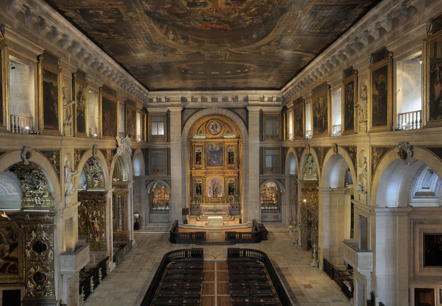
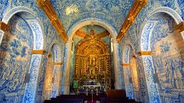
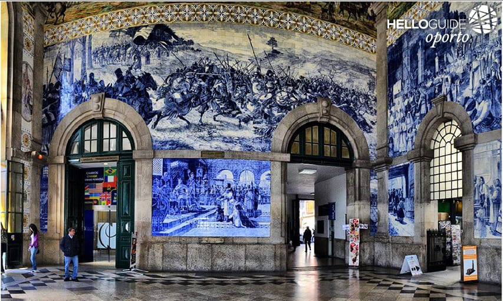
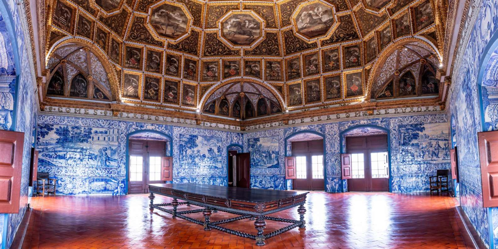
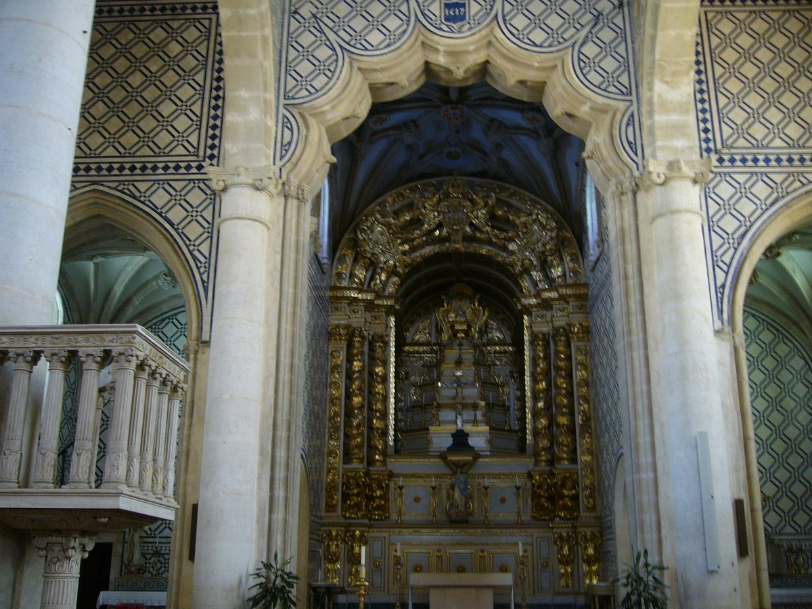
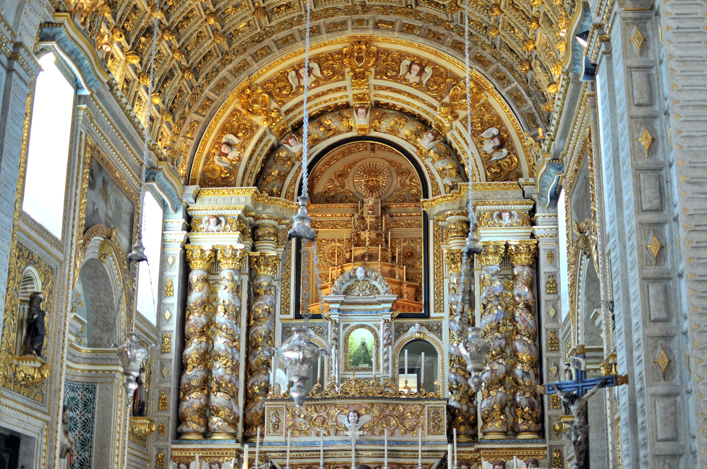
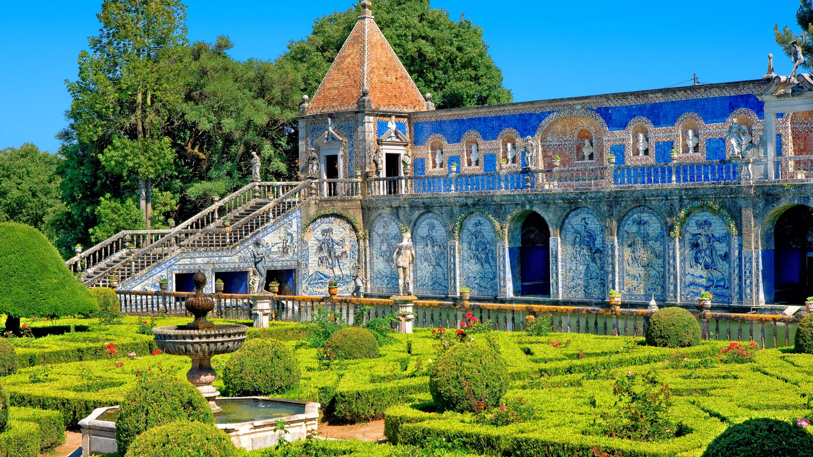

"Iglesia de São Roque (Lisboa)" (1584-1587) - Francisco de Matos

"Iglesia de São Lourenço (Almancil)"(1730) -Policarpo de Oliveira

"Estación de Tren de São Bento (Oporto)" (1905-1916) - Jorge Colaço

"Palacio Nacional de Sintra (Sintra)" (Siglos XV-XVI) - Desconocido

"Iglesia de Santa Maria de Marvila (Santarém)" (1617) - Francisco de Matos

"Iglesia de São Vicente de Fora (Lisboa)" (1710-1730) - Antonio de Oliveira

"Iglesia de Nossa Senhora da Nazaré (Nazaré)" (1708) - Desconocido

"Palacio de los Marqueses de Fronteira (Lisboa)" (1670) - Desconocido